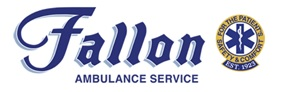

Application Coordinator
I currently work as an application coordinator at Mass General Brigham (MGB, previously named Partners Healthcare). MGB is a
network of hospitals centered around their two flagship hospitals in Boston: Mass General and Brigham & Women's. Currently they
are the largest healthcare provider in Massachusetts, treating more than a third of hospital patients in the Boston metro area. I jumped
on board when MGB was overhauling all of their sites' electronic medical record systems into a single universal system called Epic.
My team designs, implements, and supports the module that handles documentation in operating rooms. Please check out the articles
on the right to learn more about this project.
Business Systems Analyst
Immediately after graduating from undergrad, I joined a digital marketing company called Epsilon as a business systems analyst.
Epsilon is one of the world's largest digital marketers, sending billions of permission-based messages each year. My role included
onboarding new clients onto their email messaging platform, where they can manage creatives and deploy marketing campaigns
to targeted segments of their customer database. Please check out the articles on the right to learn more about Epsilon.

Emergency Medical Technician
I worked in a variety of side-jobs throughout the years, but the most interesting one is definitely working as an EMT at
Fallon Ambulance Service. Fallon provides emergency services
and transportation to over 150,000 patients annually in Brookline, Dedham, Milton, Weymouth, and the Boston-metro area. I
worked the overnight 11pm - 7am shift on Fridays, on top of my normal full-time job. Although the job was stressful, I
learned alot and have the upmost respect to all first-responders and emergency personnel.